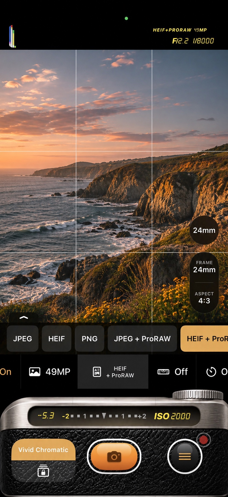
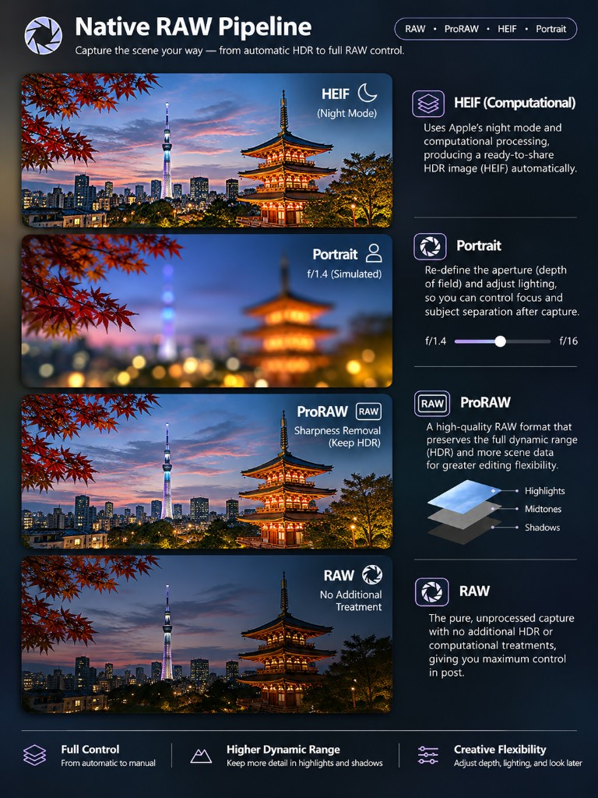

01
A raw file, developed like a camera
The reward of a digital body is the file it makes, and the pipeline inside its firmware that turns that file into its own colour. SimCam follows that path: a raw capture, developed here, with the look baked in so the finished photo is a close simulation of that camera's way of seeing. The same pipeline can hand you four different files: a finished HDR HEIF, a Portrait you can still reshape, a ProRAW that keeps the scene's range, or a Bayer RAW whose development stays yours. Night is the long craft inside the first of those: frames stacked, noise quieted, exposure and colour kept as you set them.
- RAW to finished photoSaves HEIF, JPEG or PNG with the look baked in, developed from the raw capture the way a camera finishes its own file.
- The pipeline is the simulationOn a normal shot the grain and the highlight roll-off are the ones you set, a stand-in for the processing a body does before you ever see the picture. Night starts from computational HDR frames, then stacks and grades them here.
- You choose the machineStacking runs when you pick Night or ND on the drive dial. Depth is captured when you pick Portrait. Each one is a mode you commit to, the way you would pick a long exposure or a portrait lens.
- HEIF, computationalNight finishes a ready-to-share HDR HEIF. Computational HDR frames are stacked and graded with your look, and highlights brighter than a normal print come back on an HDR screen.
- PortraitA simulated aperture, from ƒ1.4 to ƒ16, with the depth saved in the HEIF. Focus, subject separation and Portrait lighting can still be changed after the shot.
- ProRAWOn Pro models, a demosaiced linear DNG at the lens's full resolution, saved beside the finished photo. Highlights, midtones and shadows stay in the file, so a later develop still has the range.
- RAWA Bayer DNG beside the finished photo, on any RAW-capable iPhone, at 12 MP. One frame of the sensor, without a computational HDR pass, so the development is yours.
- Extended ISOShoot past the sensor's native limit, up to ISO 25,600. The extra stops are pushed during the RAW development, like push-processing film, and the EXIF records the ISO you shot at.
- Every setting rememberedEach photo carries the aperture, shutter, ISO, focal length and shooting distance, the film simulation and the look's adjustment values, the drive mode and the GPS position. Open a photo in SimCam's library and tap it to read them.
- Private by designFilm rolls and private shots are stored encrypted on the phone. Nothing leaves until you export it.

